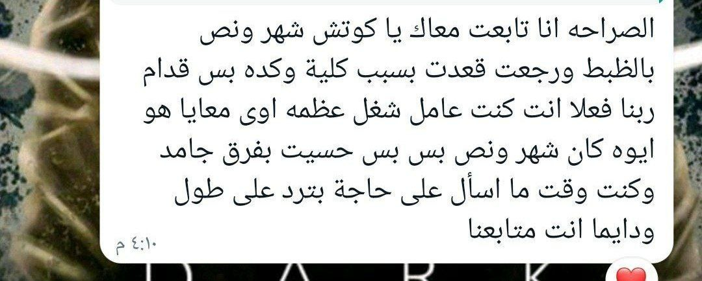
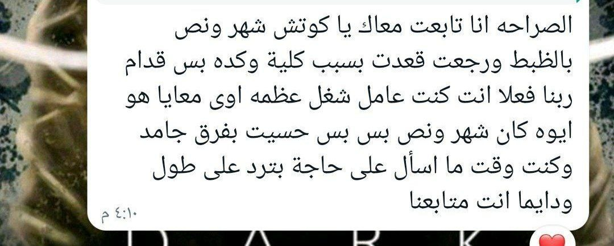
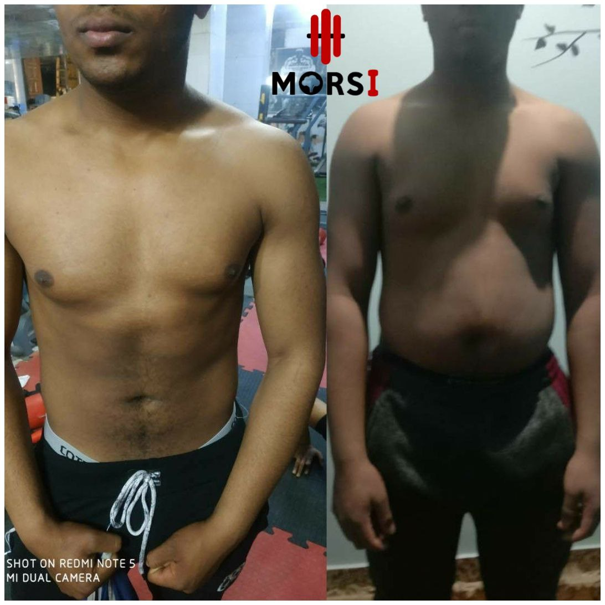
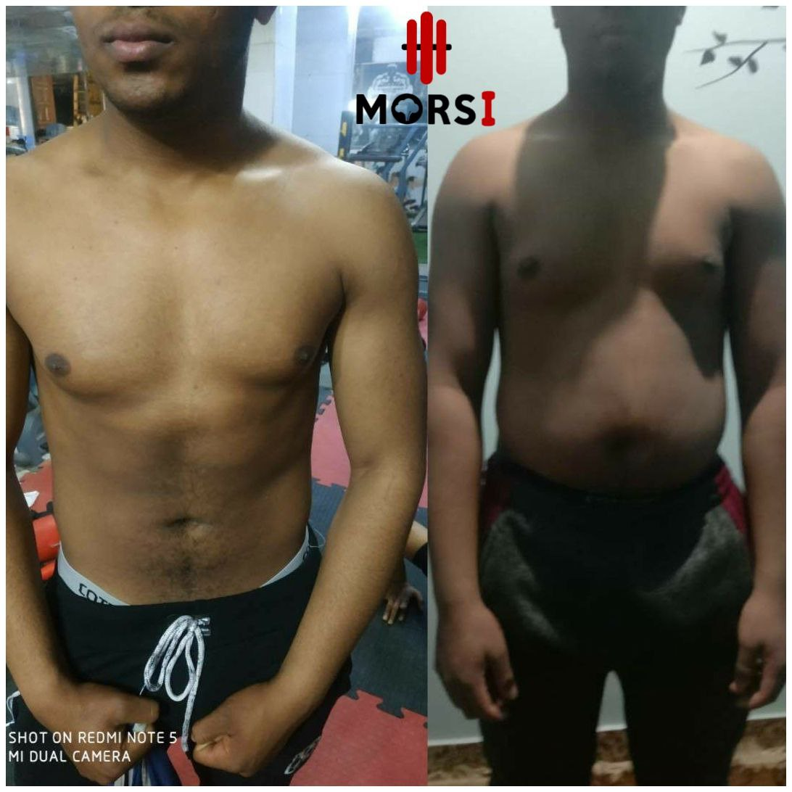

كيف تكون الرياضة جزء من حياتي
مارس الرياضه يوميا ولو لمدة خمس دقائق على الأقل من الجري أو الركض لو ممارسة الجيم كل يوم ٤٥ دقيقه في الجيم مع أخذ يوم راحه
هل تبحث بستمرار على مدرب شخصي يقدم لك خطة تدريبية وغذائية مصممة خصيصًا لتحقيق أهدافك، ويقف بجانبك خطوة بخطوة في رحلتك؟
دعني اعرفك بنفسي

بفخر أعلن أنني قد حصلت على شهادات في مجال التدريب الرياضي والتغذية غير ذالك، مما يعزز مهنتي ويعكس التفاني في تطوير مهاراتي. هذه الشهادات تمثل الالتزام بالمعرفة العلمية والتقنيات الحديثة في عالم اللياقة والصحة. مع هذه الخبرات، أنا هنا لمساعدتك في تحقيق أهدافك الصحية والرياضية بشكل مستدام. دعونا نبني معًا رحلة نجاح تعتمد على الخبرة والتفاني في تحقيق التحول الصحي
"قوتك لا تأتي من ما تفعله مرة واحدة، بل من ما تقوم به بانتظام. كل تمرين، وكل وجبة صحية تقربك أكثر إلى هدفك. استمر، وتذكّر دائمًا أن كل جهد تبذله اليوم هو استثمار في صحتك وقوتك المستقبلية"
الهيلث كوتشنج أو التدريب الصحي هو مصطلح يشير إلى عملية العمل مع مدرب صحي لتحسين اللياقة البدنية وتحقيق أهداف صحية. يقوم مدربو اللياقة البدنية الصحية بتقديم إرشادات وبرامج تمرين مخصصة لاحتياجات الفرد، سواء كانت هذه الاحتياجات تتعلق بفقدان الوزن، زيادة اللياقة البدنية، تحسين الصحة العامة، أو أي هدف صحي آخر. يشمل الهيلث كوتشنج تقديم نصائح غذائية سليمة، وتصميم برامج تمارين فعالة، ومتابعة تقدم الشخص في تحقيق أهدافه الصحية. يهدف الهيلث كوتشنج إلى تحفيز الأفراد وتمكينهم لاتخاذ قرارات صحية في حياتهم اليومية. يمكن للهيلث كوتشنج أن يكون فعّالاً في تحسين الصحة العامة وتحقيق التوازن بين النشاط البدني والتغذية السليمة. يُستخدم الهيلث كوتشنج في مختلف المجالات، بدءًا من اللياقة البدنية العامة وصولاً إلى التحكم في الوزن وإدارة التوتر وتحسين الأداء الرياضي.
سعادتي هي رؤية تقدم وتحسين حياة كل عميل يثق في رعايتي في مجال التدريب والتغذية. بفخر، أقدم دعمًا قائمًا على التفرغ لأهدافكم الصحية. ستكون الجلسات ملهمة ومتنوعة، وستتلقون توجيهًا فرديًا مصممًا خصيصًا لتحقيق أقصى استفادة من كل جلسة تدريب وتحديث لبرنامج التغذية. أنا هنا لتحفيزكم وتوجيهكم في رحلتكم نحو اللياقة والصحة الأفضل. دعونا نعمل معًا على بناء نمط حياة صحي ومستدام يعزز السعادة والتوازن في حياتكم
 


انا فخور بتحقيق عملائي لأهدافهم الصحية واللياقة البدنية بفضل البرامج التدريبية المخصصة التي أقدمها. من دواعي سروري أن أرى التحولات الإيجابية في حياة عملائي والتي تعكس التزامي وخبرتي في مجال اللياقة البدنية. تجاوز عملائي توقعاتهم بفضل التوجيه المستمر والدعم الذي أوفره لهم في كل خطوة من رحلتهم نحو اللياقة.


 

أنت تبدأ رحلة نحو الحصول على جسم مثالي. سأكون معك في كل خطوة على هذا المسار. من خلال الاهتمام بتوازنك الغذائي وممارسة التمارين الرياضية، ستلاحظ تحسنًا واضحًا في صحتك وشكلك بسهولة. دعني أكون الداعم الذي يقدم الإرشاد والدعم الذي تحتاجه لتحقيق أهدافك
الصحة هي حالة الرفاهية البدنية والعقلية والاجتماعية، وليست مجرد غياب المرض للحفاظ على صحتك، يجب أن تهتم بنمط حياتك وعاداتك اليومية، وتتبع بعض الخطوات البسيطة والمفيدة بعض الاساله يمكن ان تفيدك
مارس الرياضه يوميا ولو لمدة خمس دقائق على الأقل من الجري أو الركض لو ممارسة الجيم كل يوم ٤٥ دقيقه في الجيم مع أخذ يوم راحه

تعد الرياضة من العوامل الأساسية لتحسين صحة الفرد وإكتسابه اللياقة البدنية والوقاية من بعض الأمراض. وتختلف الفائدة المكتسبة منها باختلاف الممارسة ومدتها وعدد مراتها في الأسبوع .
يساعدك على تحديد أهدافك الصحية ووضع خطط عملية ومتابعة تنفيذها وتقييم النتائج. يحفزك على الالتزام بالنظام الغذائي والرياضة والاسترخاء والنوم الجيد وغيرها من العوامل التي تؤثر على صحتك.

تحسين الصحة العامة وايضا زيادة الطاقة والحيوية تحسين المزاج والتوتر النفسي، يساعد الجمع بين النظام الغذائي الصحي والتمارين الرياضية تعزيز العافية وتحسين جودة الحياة بشكل عام.
.accordion-flush class. This is the first item's accordion body..accordion-flush class. This is the second item's accordion body. Let's imagine this being filled with some actual content..accordion-flush class. This is the third item's accordion body. Nothing more exciting happening here in terms of content, but just filling up the space to make it look, at least at first glance, a bit more representative of how this would look in a real-world application.